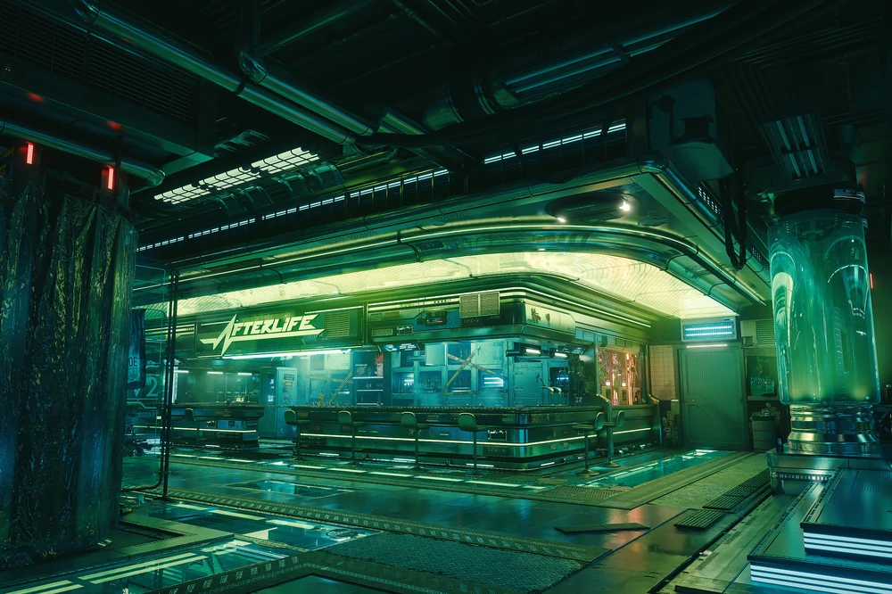

-
Afterlife:
Afterlife es uno de los bares más famosos y emblemáticos de Night City. Ubicado en un antiguo depósito de cadáveres, este lugar se convirtió en el punto de encuentro de mercenarios, edgerunners y personajes importantes de la ciudad.

-
Arasaka Tower:
Es uno de los edificios más imponentes y reconocibles de Night City. Esta enorme estructura representa el poder, la riqueza y la influencia de la corporación Arasaka sobre la ciudad. Su diseño moderno y tecnológico se eleva sobre los demás edificios, convirtiéndola en un símbolo del dominio corporativo.

-
Pacific Park:
Enorme parque de diversiones ubicado en Pacifica, una zona costera de Night City. Sus luces, atracciones y juegos contrastan con el ambiente oscuro y decadente de la ciudad, convirtiéndolo en uno de los lugares más llamativos para quienes buscan entretenimiento y escapar por un momento de la vida cotidiana.